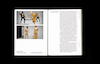
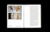
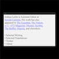
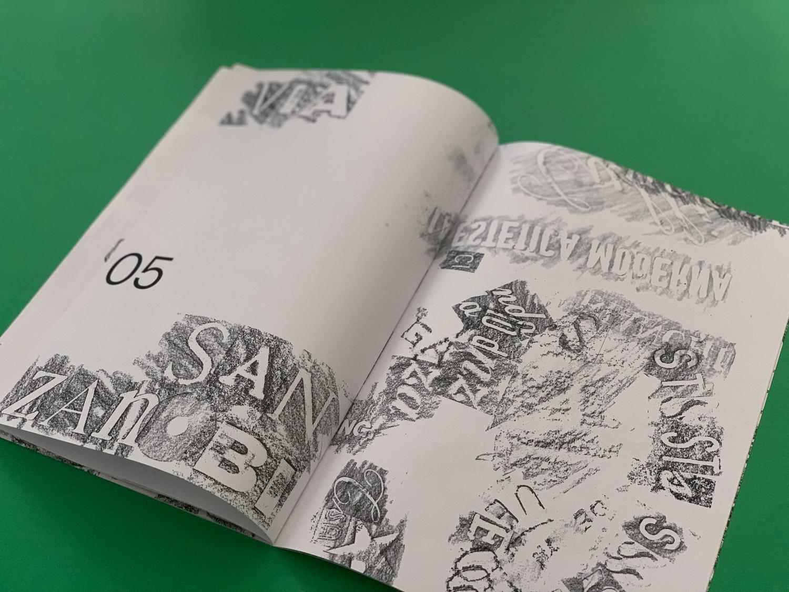
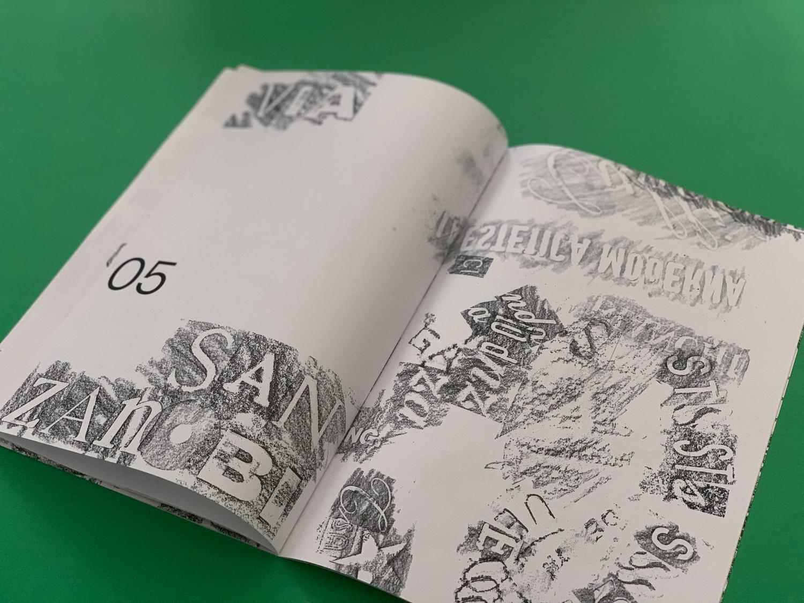

Cyberotica
On art, sex, & robots
 
Postcursor / Starrynite
Machine learning as conditional design

Reflections on Practice
Not a process book


Armour Magazine Showreel
Selects from 4 years of creative direction
Cocktails of the Major Arcana
Mixology for pagans

Joshua Leifer dotcom
A writerly portfolio site


Reconna Typeface
A typeface inspired by 19th-century print


Found Soundscapes
Phonetic poetry from the streets of Florence
 
Nike: Discover Your Air
A '90s-infused ad campaign
Super Mario Void
A video game for nihilists

Save Local Booksellers
On supporting independent bookstores

Brett Castro: a/B parts I-V
An album art series

Emmie James: Dead to Me
Another album art series
The Spirit Molecule
A psychedelic microsite

Tenets for Anarchic Design
Instructions for radical practice

Looking for something? More available upon request — ask away :)